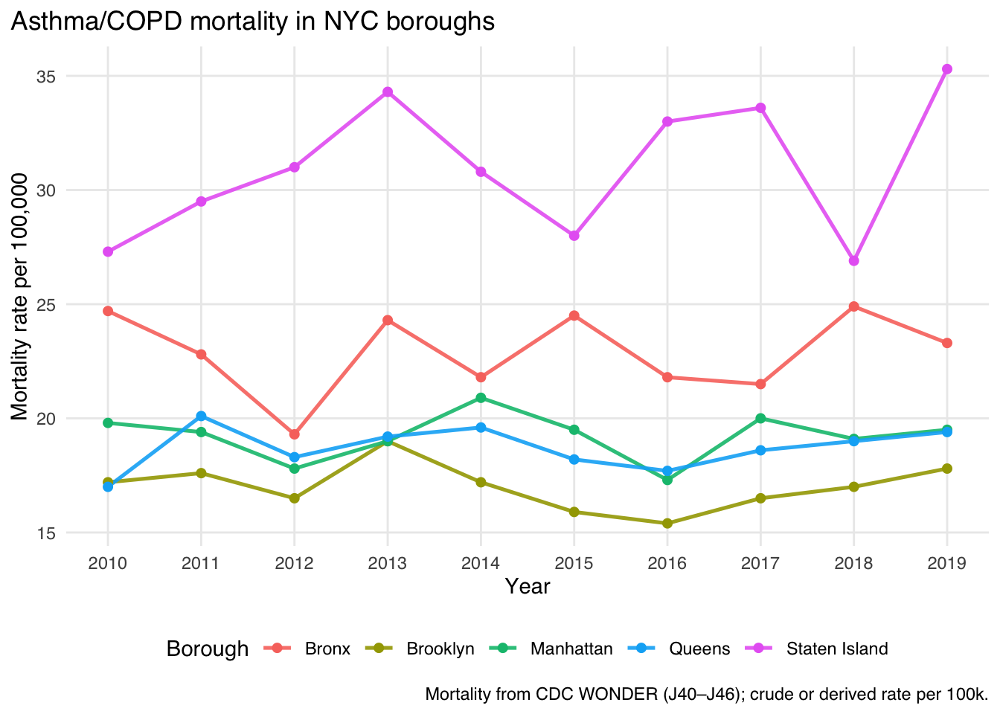
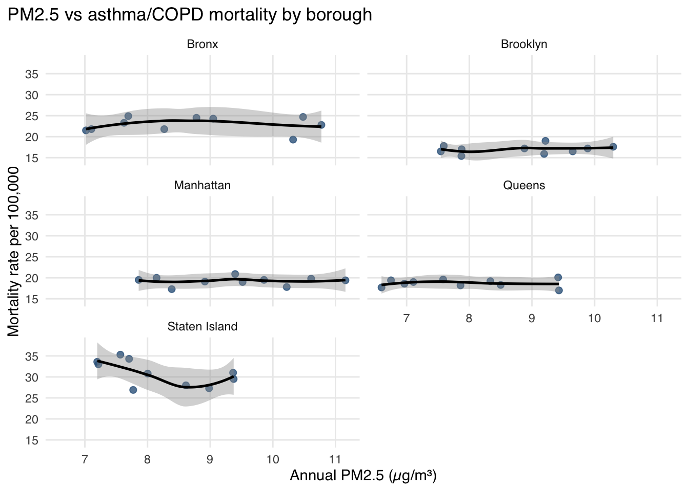
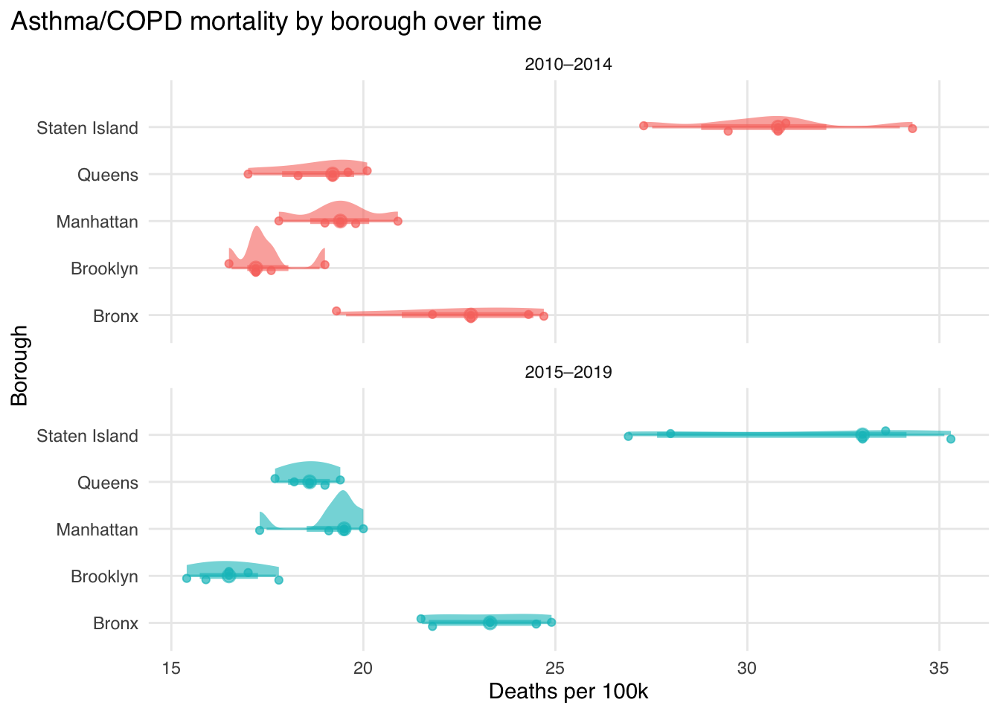
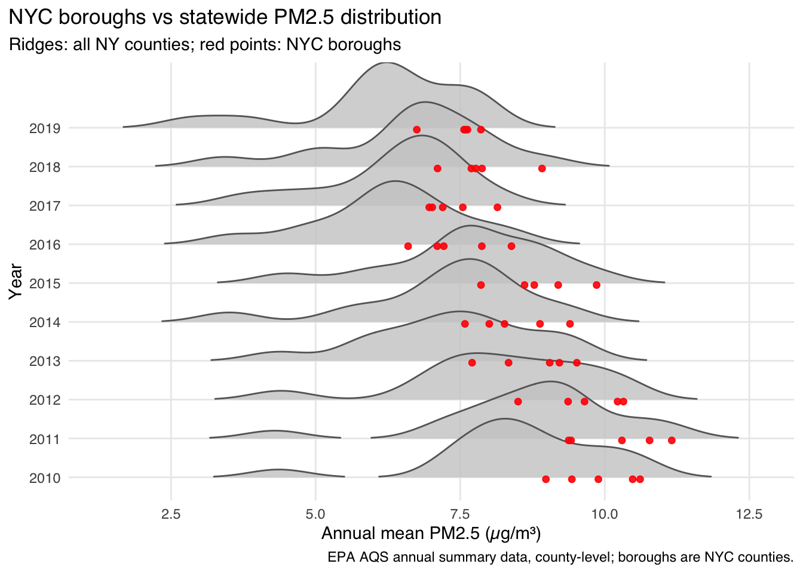
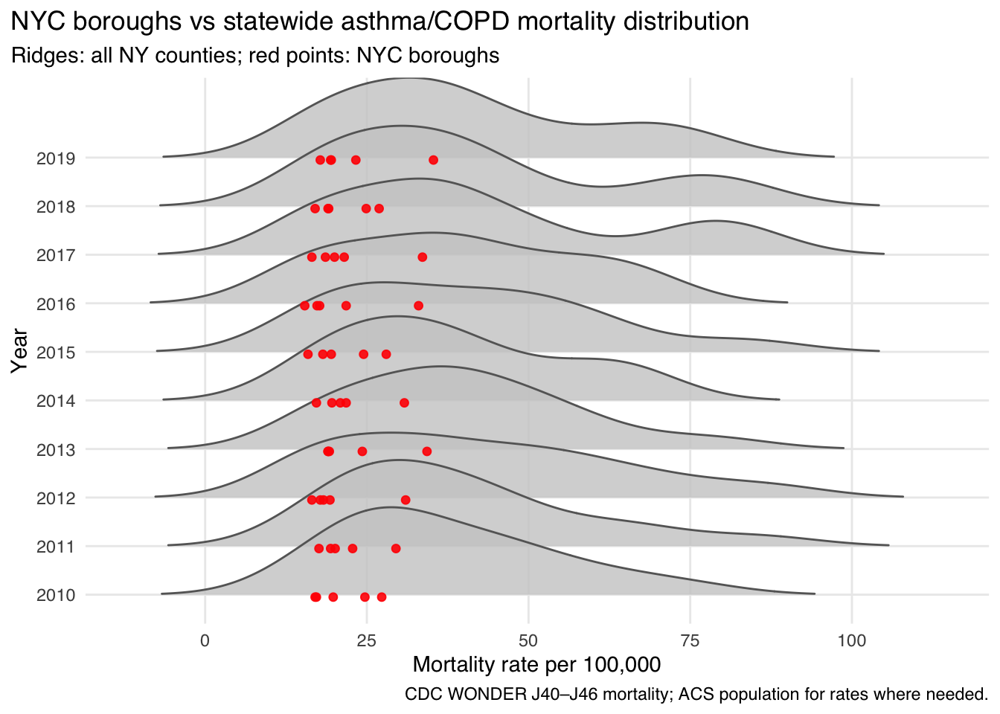
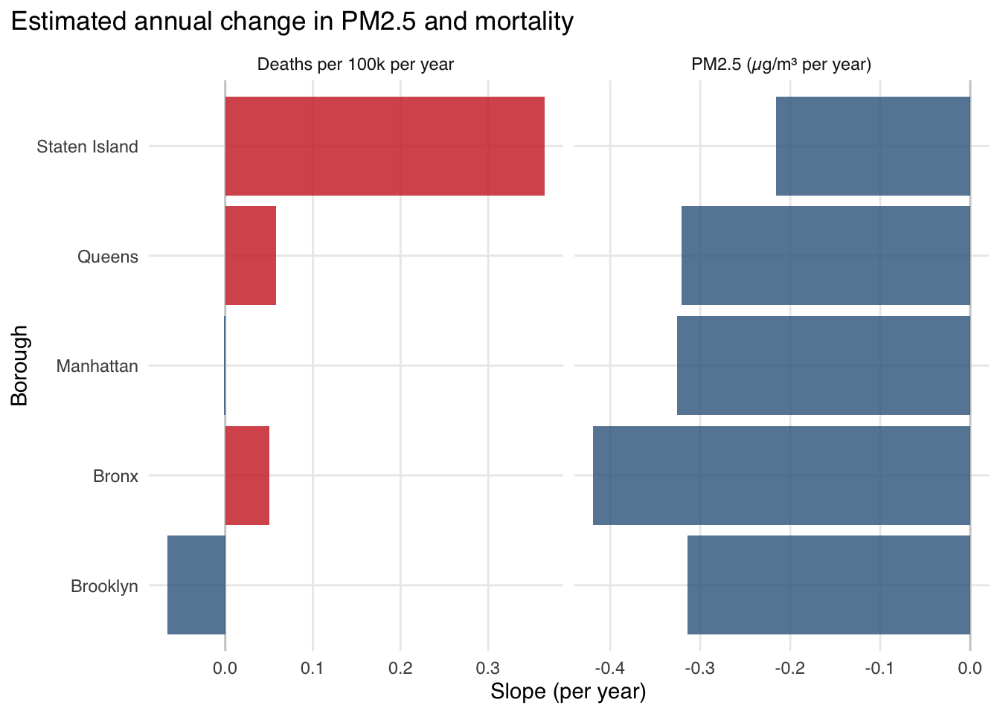
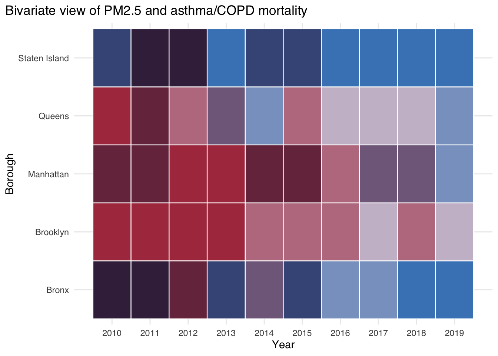
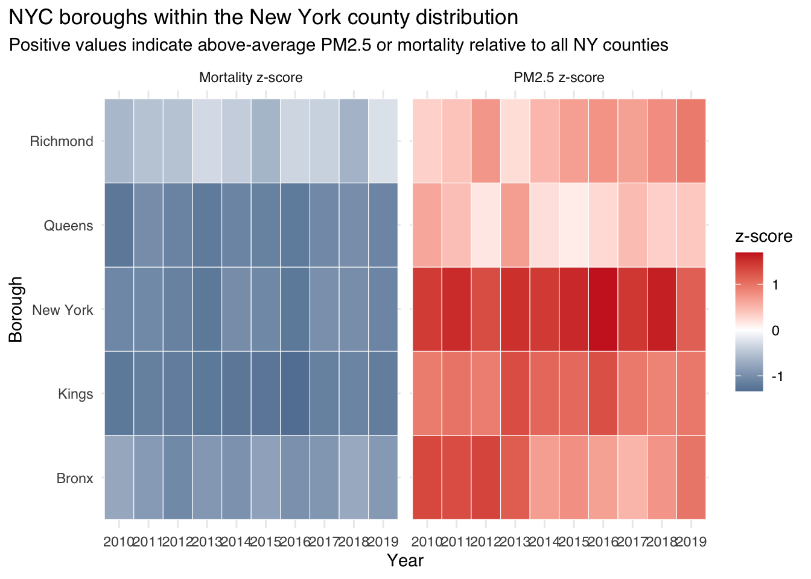

Across 2010–2019, We see a gentle downward drift in annual PM₂.₅ in every New York City borough, with differences between boroughs narrowing over time. Asthma and COPD mortality move more erratically from year to year, but boroughs with persistently higher pollution often appear toward the upper end of the mortality range, especially the Bronx, although the relationship is not perfectly one-to-one.
When we compare New York City to the rest of New York State, the boroughs generally sit at or slightly above the statewide PM₂.₅ distribution, while their mortality experience is more mixed. The Bronx, in particular, stands out as a borough that often combines relatively poor air quality with above-average asthma/COPD mortality.
The time-series plot shows that all five boroughs live in a fairly tight PM₂.₅ band and have been drifting downward over the decade, reflecting broad regional improvements in air quality. While there are some small gaps between boroughs in individual years, those differences are modest relative to the overall downward trend.
For the choropleth maps we focus on 2019, which is the last year in our analysis window for which we have complete information from all three data sources (EPA AQS for PM₂.₅, CDC WONDER for asthma/COPD mortality, and ACS for population/income) for all five NYC boroughs. Earlier years have gaps (e.g., missing mortality or ACS values for one or more boroughs), which would make a borough-by-borough map misleading. We therefore use 2019 as a clean, up-to-date snapshot year and rely on the time-series plots in the previous sections to show how these patterns evolve over time.
Comparing boroughs only to one another doesn’t tell us how they compare to the rest of New York State. This dumbbell plot anchors each year at the statewide median PM2.5 and shows how far each borough lies above or below it, making the Bronx and Manhattan’s persistently higher pollution stand out.
The previous plots focused on PM2.5 alone. To see the broader context, we plot PM2.5, mortality, population, and income together in a parallel-coordinates plot. This shows that the boroughs with higher pollution also tend to be denser and lower-income, hinting at structural differences behind exposure and health burden.
Parallel coordinates can become visually dense, so we also compress the same four variables into two principal components. The PCA biplot shows how borough-years cluster and which variables drive separation; pollution and mortality load together, while higher income points in an opposite direction.
3.2 Are higher PM2.5 levels associated with asthma/COPD mortality?
Code
ggplot(borough_panel_plot, aes(x = year, y = mortality_rate_per_100k, color = borough)) +geom_line(linewidth =0.9, alpha =0.9) +geom_point(size =1.8) +scale_x_continuous(breaks = year_breaks,minor_breaks =NULL,limits = year_limits ) +labs(title ="Asthma/COPD mortality in NYC boroughs",x ="Year",y ="Mortality rate per 100,000",color ="Borough",caption ="Mortality from CDC WONDER (J40–J46); crude or derived rate per 100k." ) +theme(legend.position ="bottom")

Before linking pollution and health directly, we mirror the PM₂.₅ time series with a matching time series for asthma/COPD mortality. Mortality fluctuates from year to year, with some hints of improvement in a few boroughs. However, the Bronx – and to a lesser extent Brooklyn – remain consistently toward the high end of the range, suggesting uneven health gains.
Code
ggplot( borough_panel_plot,aes(x = pm25_annual, y = mortality_rate_per_100k)) +geom_point(size =2, alpha =0.8, color ="steelblue4") +geom_smooth(method ="loess",se =TRUE,linewidth=0.9,span =0.9,color ="black" ) +labs(title ="PM2.5 vs asthma/COPD mortality by borough",x ="Annual PM2.5 (µg/m³)",y ="Mortality rate per 100,000" ) +facet_wrap(~ borough, ncol =2) +theme(legend.position ="none")

Time series don’t show how PM2.5 and mortality line up in the same year. By faceting a scatterplot of mortality vs PM2.5 for each borough, we see that some boroughs (notably the Bronx) cluster in the higher-pollution, higher-mortality corner, while Staten Island tends to occupy the lower part of the space.
The dot plot summarises the decade in two numbers per borough and makes the contrast clearer: boroughs with the worst air also tend to have the highest average mortality. The pattern is not perfectly one-to-one, but the same boroughs repeatedly appear toward the high-risk end of both scales.
Code
if (!"ggdist"%in%rownames(installed.packages())) {install.packages("ggdist")}library(ggdist)year_min <-min(borough_panel_plot$year, na.rm =TRUE)year_max <-max(borough_panel_plot$year, na.rm =TRUE)mid_cut <-floor((year_min + year_max) /2)mort_rain <- borough_panel_plot |> dplyr::mutate(period = dplyr::case_when( year <= mid_cut ~paste0(year_min, "–", mid_cut),TRUE~paste0(mid_cut +1, "–", year_max) ) )ggplot( mort_rain,aes(x = mortality_rate_per_100k, y = borough, fill = period, color = period)) +stat_halfeye(orientation ="horizontal",alpha =0.6,point_interval="median_qi" ) +geom_jitter(height =0.1,width =0,alpha =0.7,size =1.5 ) +facet_wrap(~ period, ncol =1) +labs(title ="Asthma/COPD mortality by borough over time",x ="Deaths per 100k",y ="Borough",fill ="Period",color ="Period" ) +theme(legend.position ="none")

The scatterplots don’t easily show how the distribution of mortality changed over time within each borough. Splitting the years into early vs late periods, the raincloud plots reveal both shifts in median mortality and changes in spread, with some boroughs showing more consistent improvement than others.
All previous associations between PM2.5 and mortality were bivariate. Here we fit a simple county-level model that includes median income and population density, then plot partial residuals for PM2.5. The partial residual plot suggests that counties with higher PM₂.₅ also tend to have higher mortality even after adjusting for income and population density, though the relationship is noisy and should be interpreted as exploratory rather than causal.
3.3 After normalizing by population, which boroughs are outliers vs the rest of NY State?
Code
if (!"ggridges"%in%rownames(installed.packages())) {install.packages("ggridges")}library(ggridges)pm_ridge_data <- ny_county_panel |> dplyr::filter(!is.na(pm25_annual))ggplot(pm_ridge_data, aes(x = pm25_annual, y =factor(year))) + ggridges::geom_density_ridges(rel_min_height =0.01,fill ="grey80",color ="grey40",alpha =0.8 ) +geom_point(data = pm_ridge_data %>% dplyr::filter(is_nyc_borough),aes(x = pm25_annual, y =factor(year)),color ="red",size =1.6,alpha =0.9,position =position_nudge(y =-0.05) ) +labs(title ="NYC boroughs vs statewide PM2.5 distribution",subtitle ="Ridges: all NY counties; red points: NYC boroughs",x ="Annual mean PM2.5 (µg/m³)",y ="Year",caption ="EPA AQS annual summary data, county-level; boroughs are NYC counties." )

To see how NYC compares to the full statewide distribution, we plot ridges of county-level PM2.5 by year, overlaying NYC boroughs as red points. The boroughs rarely sit at the low end; in many years they lie clearly on the higher side of the statewide distribution.
Code
mort_ridge_data <- ny_county_panel |> dplyr::filter(!is.na(mortality_rate_per_100k))ggplot(mort_ridge_data, aes(x = mortality_rate_per_100k, y =factor(year))) + ggridges::geom_density_ridges(rel_min_height =0.01,fill ="grey80",color ="grey40",alpha =0.8 ) +geom_point(data = mort_ridge_data %>% dplyr::filter(is_nyc_borough),aes(x = mortality_rate_per_100k, y =factor(year)),color ="red",size =1.6,alpha =0.9,position =position_nudge(y =-0.05) ) +labs(title ="NYC boroughs vs statewide asthma/COPD mortality distribution",subtitle ="Ridges: all NY counties; red points: NYC boroughs",x ="Mortality rate per 100,000",y ="Year",caption ="CDC WONDER J40–J46 mortality; ACS population for rates where needed." )

We then repeat the ridge view for asthma/COPD mortality. The Bronx especially tends to lie in the upper part of the statewide mortality distribution, suggesting that its respiratory burden is high not only relative to other boroughs but also relative to other NY counties.
Ridge plots show where boroughs sit in the overall distribution but not by how much they differ from a “typical” county. The Cleveland dot plots recenter each year on the statewide median and show borough-level deviations for both PM2.5 and mortality, highlighting which boroughs are systematically above or below the NY median
slopes_long <- borough_trends %>% tidyr::pivot_longer(cols =c(pm25_slope, mort_slope),names_to ="metric",values_to ="slope" ) %>% dplyr::mutate(metric = dplyr::recode( metric,pm25_slope ="PM2.5 (µg/m³ per year)",mort_slope ="Deaths per 100k per year" ) )ggplot(slopes_long,aes(x = slope, y =reorder(borough, slope), fill = slope <0)) +geom_vline(xintercept =0, color ="grey80") +geom_col(alpha =0.8) +facet_wrap(~ metric, scales ="free_x") +scale_fill_manual(values =c("TRUE"="steelblue4", "FALSE"="firebrick3"), guide ="none") +labs(title ="Estimated annual change in PM2.5 and mortality",x ="Slope (per year)",y ="Borough" )

Code
if (!"biscale"%in%rownames(installed.packages())) {install.packages("biscale")}library(biscale)boro_bivar <-bi_class( borough_panel_plot,x = pm25_annual,y = mortality_rate_per_100k,style ="quantile",dim =3)ggplot(boro_bivar, aes(x = year, y = borough, fill = bi_class)) +geom_tile(color ="white", linewidth =0.4) +bi_scale_fill(pal ="DkViolet", dim =3) +scale_x_continuous(breaks = analysis_years) +labs(title ="Bivariate view of PM2.5 and asthma/COPD mortality",x ="Year",y ="Borough" ) +theme(legend.position ="none")

Code
ny_zscores <- ny_county_panel |> dplyr::filter(!is.na(pm25_annual),!is.na(mortality_rate_per_100k) ) |> dplyr::group_by(year) |> dplyr::mutate(pm25_z = (pm25_annual -mean(pm25_annual, na.rm =TRUE)) / stats::sd(pm25_annual, na.rm =TRUE),mort_z = (mortality_rate_per_100k -mean(mortality_rate_per_100k, na.rm =TRUE)) / stats::sd(mortality_rate_per_100k, na.rm =TRUE) ) |> dplyr::ungroup() |> dplyr::filter(fips_state_county %in% nyc_boroughs$fips_state_county)nyc_z_long <- ny_zscores |> dplyr::select(year, county_name, pm25_z, mort_z) |> tidyr::pivot_longer(cols =c(pm25_z, mort_z),names_to ="metric",values_to ="z" ) |> dplyr::mutate(metric = dplyr::recode( metric,pm25_z ="PM2.5 z-score",mort_z ="Mortality z-score" ) )#| fig-cap: "NYC boroughs relative to the statewide distribution (z-scores)."ggplot(nyc_z_long,aes(x =factor(year), y = county_name, fill = z)) +geom_tile(color ="white") +facet_wrap(~ metric) +scale_fill_gradient2(low ="steelblue4",mid ="white",high ="firebrick3",midpoint =0 ) +labs(title ="NYC boroughs within the New York county distribution",subtitle ="Positive values indicate above-average PM2.5 or mortality relative to all NY counties",x ="Year",y ="Borough",fill ="z-score" )

The z-score heatmap translates “above or below average” into color: warm tones mark years when a borough is well above the statewide mean, cool tones when it is well below. A few boroughs consistently light up on both the PM₂.₅ and mortality panels, reinforcing the idea that the same communities are repeatedly exposed to higher risk.